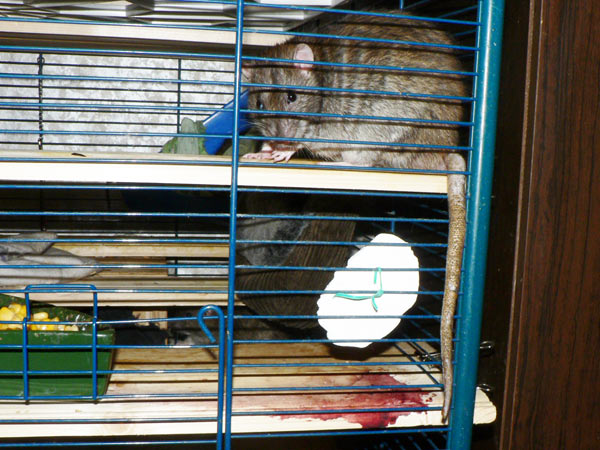
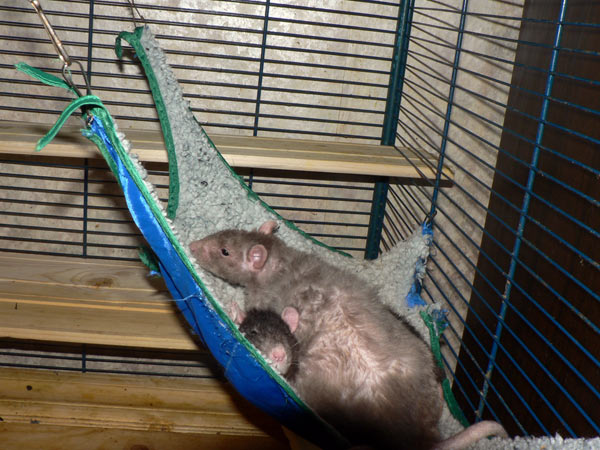
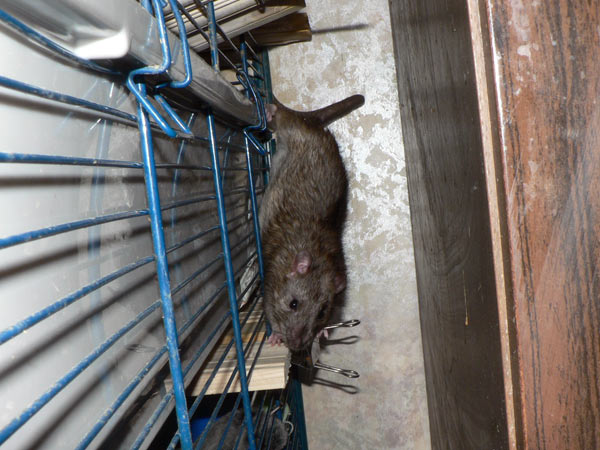
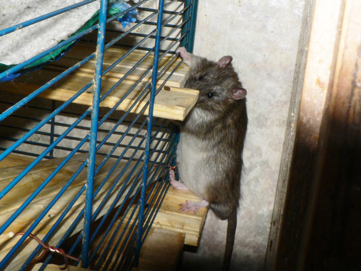
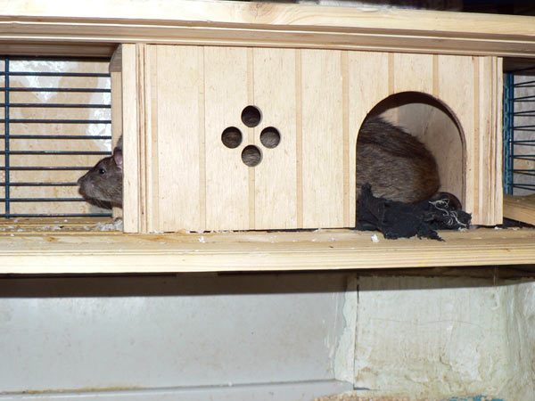
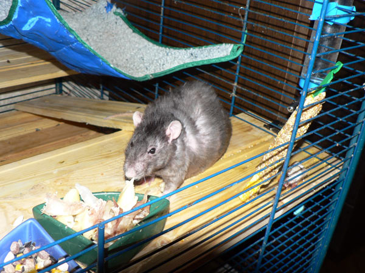
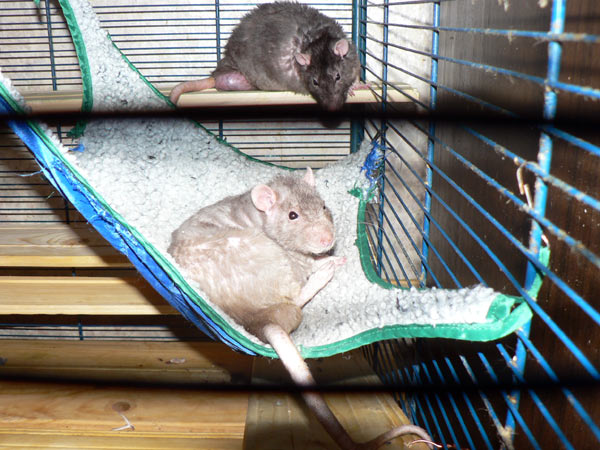

Вареные яйца, подписаны, чтобы не перепутать.
А еще в холодильнике есть крысиная полка, иногда более заставленная,чем
хозяйская.

Молодежь подросла и начала качать права.
Покусали Терабайта, тот забился в угол у кормушки и там сидел безвылазно.

А Джон и Дюк забаррикадировались в домике.
Пришлось рассаживать, теперь наверху клетки Циклон Б,
Сентябрь и Терабайт,
а внизу — братья Джон Ди и Дюк Нюкем.

Сеня использует Циклона как одеяло.

Дюк вывесил хвост на обохрение.

— Не, свяливаю, засекли!

— Джон, что ты там внизу делаешь?

— Лезь за мной, показываю!

Инструкция для гостей: не надо ставить сумки на стол в
комнате,
оттуда крысы могут вытащить всякое
и сделать вид, что они просто мимо проходили.

Когда-то это окно было такое же, как спереди домика (см. след. фото).

Это не длинный крыс, а две части двух крысов видно.

Сеня любит курятину.

Циклон Б: — А можно мне лекарство прямо сюда на ложечке?

Вот что значит мыльница вместо фотоаппарата: вообще-то это
Сеня больше размером,
просто Циклон тут ближе, а резкость фокуса навести невозможно.

Сеня: — А что это там за звуки внизу?

А это подлые грызуны снизу пытаются прорваться наверх!